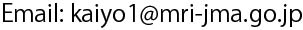

気象庁気象研究所は、海洋大循環モデル(Meteorological Research Institute Community Ocean Model（MRI.COM）、 以下「当モデル」と記す)を、気候・海洋等の研究のための基礎プログラムとして、気象研究所と共同研究又はそれに準じる契約(下記)を締結した研究機関等が行う研究目的のために提供します。この提供は、多くの分野の専門家との連携を強化し、最新の研究成果をプログラムに取り込むことを目的とし、気象庁のモデル貸与制度の下で行われます。
申し込み内容を気象研究所で検討の上、GitHub上のソースコードへのアクセス権を与えます。これをもって、共同研究に準じる契約を締結したものと見なします。
MRI.COM利用規約
モデル利用に関する条件
- 当モデル利用者の氏名、所属、連絡先及び利用目的を明らかにする。
- 研究目的に限って使用し、業務での利用や営利目的などには使用しない。
- 当モデル及び改造したモデルを使用した研究成果を、学会等の研究発表または印刷物等として公表する際は、気象庁のモデルを利用した研究である旨を明記する。
- 当モデル及び改造したモデルを第三者へ提供しない。
- 当モデルの欠陥に起因するいかなる結果に対しても気象庁に責任を求めない。
- 当モデル及び改造したモデルは、原則として研究が終了次第、気象庁に返却するものとする。
モデル改造に関する条件
- 当モデルに関する著作権は気象庁が独占的に行使できる。
- 当モデル利用者は当モデルの一部を改造し、プログラムの改良に貢献することができる。その場合、当該利用者は貢献したプログラム部分にのみ著作権を保持する。
- 当モデル利用者は、モデル改造部分について気象庁が開示を要求した場合は速やかに応じる。
- 気象庁は当モデルを改良するために、当モデル利用者による改造部分を自由に使用できる。その場合、改造部分の著作者は気象庁に対して、当該部分を使用、変更、複製及び配布できる許可、並びに当該部分を第三者が使用、変更、複製できる許可、いわゆるサブライセンス権を与える。付与した許可とサブライセンス権は取り消し不可能とする。また改造部分について、特許に基づく差し止め請求や使用料の徴収等、特許権を行使しない。
その他
- 必要であれば随時、本規約は見直される。
- 本規約に違反した場合、もしくは本規約が変更され、その変更に合意できない場合は、当モデル利用をただちに停止する。
利用申し込み
利用申し込みは、以下の内容で  にメールしてください。
申し込みした場合、上のMRI.COM利用規約に同意したものとみなします。
ソースコードの提供はGitHubで行うため、無料プランで良いので事前にGitHubアカウントを取得してください。